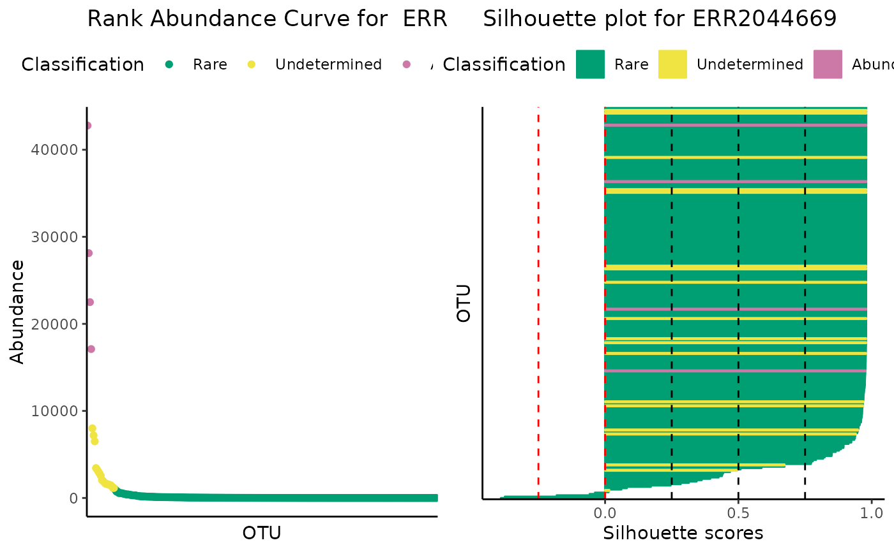
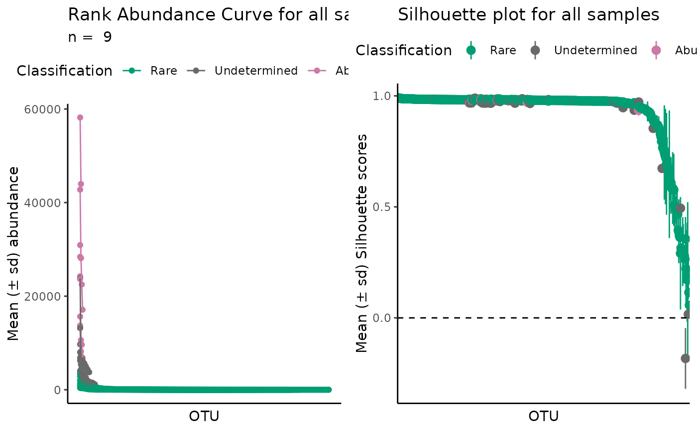
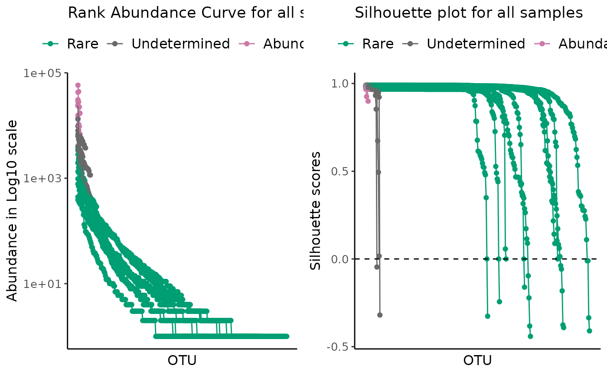

Plot ulrb clustering results
plot_ulrb.RdFunction to help access clustering results from ulrb.
Usage
plot_ulrb(
data,
sample_id = NULL,
taxa_col,
plot_all = FALSE,
silhouette_score = "Silhouette_scores",
classification_col = "Classification",
abundance_col = "Abundance",
log_scaled = FALSE,
colors = c("#009E73", "#F0E442", "#CC79A7"),
...
)Arguments
- data
a data.frame with, at least, the classification, abundance and sample information for each taxonomic unit.
- sample_id
string with name of selected sample.
- taxa_col
string with name of column with taxonomic units. Usually OTU or ASV.
- plot_all
If TRUE, will make a plot for all samples with mean and standard deviation. If FALSE (default), then the plot will illustrate a single sample, that you have to specifiy in sample_id argument.
- silhouette_score
string with column name with silhouette score values. Default is "Silhouette_scores"
- classification_col
string with name of column with classification for each row. Default value is "Classification".
- abundance_col
string with name of column with abundance values. Default is "Abundance".
- log_scaled
if TRUE then abundance scores will be shown in Log10 scale. Default to FALSE.
- colors
vector with colors. Should have the same lenght as the number of classifications.
- ...
other arguments
Value
A grid of ggplot objects with clustering results and
silhouette plot obtained from define_rb().
Details
This function combined plot_ulrb_clustering() and plot_ulrb_silhouette().
The plots can be done for a single sample or for all samples.
The results from the main function of ulrb package, define_rb(), will include the classification of
each species (OTU, ASVs, etc) and the silhouette score obtained for each observation. Thus, to access the clustering results, there are two main plots to check:
the rank abundance curve obtained after ulrb classification;
and the silhouette plot.
Interpretation of Silhouette plot
Based on chapter 2 of "Finding Groups in Data: An Introduction to Cluster Analysis." (Kaufman and Rousseeuw, 1990); a possible (subjective) interpretation of the clustering structure based on the Silhouette plot is:
0.71-1.00 (A strong structure has been found);
0.51-0.70 (A reasonable structure has been found);
0.26-0.50 (The sructure is weak and could be artificial);
<0.26 (No structure has been found).
Examples
classified_species <- define_rb(nice_tidy)
#> Joining with `by = join_by(Sample, Level)`
# Default parameters for a single sample ERR2044669
plot_ulrb(classified_species,
sample_id = "ERR2044669",
taxa_col = "OTU",
abundance_col = "Abundance")

# All samples in a dataset
plot_ulrb(classified_species,
taxa_col = "OTU",
abundance_col = "Abundance",
plot_all = TRUE)
#> Warning: Removed 197 rows containing missing values (`geom_segment()`).
#> Warning: Removed 197 rows containing missing values (`geom_segment()`).

# All samples with a log scale
plot_ulrb(classified_species,
taxa_col = "OTU",
abundance_col = "Abundance",
plot_all = TRUE,
log_scaled = TRUE)
#> Warning: Removed 197 rows containing missing values (`geom_segment()`).
#> Warning: Removed 197 rows containing missing values (`geom_segment()`).
